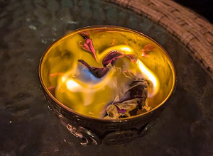

Projects / 🔥 burning bowl ceremony
Context
My life needs more rituals. Listening to this Hidden Brain episode was the final nudge I needed to initiate a new year's ritual. After searching, the burning bowl ceremony resonated with me the most, especially as someone who loves fire (I love a gas stove). I just hosted my 3rd annual burning bowl ceremony with friends, and I'm so glad I started this annual tradition. In today's high-tech, hyper-paced, distraction-riddled society, it's difficult to find time to really reflect and reset your intent. Burning Bowl has been such a cerebral, wholesome, and communal activity that I look forward to at the end of every year.
How to host a burning bowl ceremony for overthinkers
- Determine a location for the ceremony
- Create a custom Google Map to communicate parking situation to [Google - My Maps ]
- Create Google Calendar Event
- Create Partiful Event
- Add description and details to both events in Partiful and GCal on how to get there, parking, what to expect, what to bring (if applicable), if there will be food, what we will do
- Invite friends
- Have friends write things down they want to peacefully let go and release from the previous year via burning bowl ceremony
- Have friends share their notes if they want
- Put notes in bowl
- Light a candle (with a match ideally for maximum witchy effect)
- Pass candle around in circle and ask friends to put their intentions or energy into the candle
- Light notes in bowl with a match or candle
- Have friends write down their intentions or theme for the new year
- Put these notes inside a ziploc bag
- Take freezeable/glass tupperware and fill ~halfway with water and freeze
- The next day, put ziploc bag with opening seal outside of tupperware and fill the rest of the way with water
- Freeze
- At the next burning bowl, unfreeze the previous year's intentions and ask friends to share (if they want)
- Repeat annually